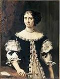
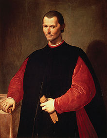

We love family
Seorang filsuf dan penulis asal Italia, Niccolo di Bernardo dei Machiavelli lahir di kota Florence, Italia. Meski melakukan berbagai profesi sepanjang hidupnya, Machiavelli lebih dikenal sebagai pendiri ilmu politik modern lewat bukunya yang paling terkenal Il Principe (1513). Machiavelli terlahir bukan dari keluarga berada. Ayahnya, Bernardo meski adalah seorang pakar hukum, di antara keluarganya dialah yang paling miskin. Akibat tak mampu membayar utang, ayah Machiavelli tak diizinkan menduduki jabatan publik apapun. Alhasil Bernardo harus hidup hemat di sebuah rumah kecil di luar kota Florence. Dia mendapatkan uang karena secara diam-diam mendapatkan nafkah dari profesinya. Meski miskin, Bernardo memiliki perpustakaan yang pasti menjadi santapan Machiavelli kecil. Namun, tak diketahui soal pendidikan Machiavelli di masa kecil.
Marietta CorsiniIstri Niccolò Machiavelli (istri machiavelli)
Niccolo Machiavelli
Bernardo di Niccolò Machivelli (ayah machiavelli)
| Istri | Marietta CorsiniIstri Niccolò Machiavelli |
| Ayah | Bernardo di Niccolò Machiavelli |
| Ibu | Bartolommea di Stefano Nelli |
| Saudara perempuan Niccolò Machiavelli | Spring Machiavelli |
| Putra Niccolò Machiavelli | Guido Machiavelli |
| Putra Niccolò Machiavelli | Piero Machiavelli |
| Putra Niccolò Machiavelli | Lodovico Machiavelli |
| Putri Niccolò Machiavelli | Primerana Machiavelli |
| Putri Niccolò Machiavelli | Baccina Machiavelli |
| Saudara perempuan Niccolò Machiavelli | Totto Machiavelli |
| Putra Niccolò Machiavelli | Bernardo Machiavelli |
| Saudara perempuan Niccolò Machiavelli | Margherita Machiavelli |